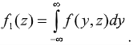

2.7 Моделювання випадкових векторів
|
Випадковий вектор визначається проекціями на осі координат.
Проекції є випадковими величинами, що описуються спільним законом розподілу. Існують два підходи до моделювання випадкових векторів: – з використанням власних функцій щільності компонентів вектора; – з використанням кореляційної матриці. Постановка задачі: Двовимірний випадковий вектор (η, ξ), заданий спільною функцією щільності f(y, z). Необхідно сформувати послідовність його реалізацій, тобто послідовність пар значень його координат (yj, zj). Розв’язання задачі: Визначається окрема функція щільності однієї із складових ξ випадкового вектора:

|
|
З послідовності псевдовипадкових чисел, квазірівномірно розподілених
в інтервалі числової осі (0, 1), вибирається чергове число xi
і одним з розглянутих способів визначається відповідне йому значення
zj
випадкової величини ξ, яка має функцію щільності fl(z).
Виходячи з умови ξ = zj, визначається функція щільності умовного розподілу іншої складової η випадкового вектора: 
|
|
Далі з послідовності псевдовипадкових чисел, квазірівномірно розподілених в інтервалі
числової осі (0, 1), витягується наступне число xi+1 і
визначається відповідне йому значення yj випадкової величини
η, яка має функцію щільності
f2(y/zj+1).
|